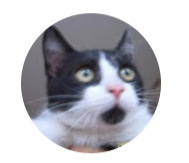

1. Pool 이익의 일부를 위임자들에게 카르다노 생태계 코인 에어드랍
2. 어려운 이웃 기부
3. 커뮤니티 정모 비용 충당
위임하신 분들에게는 카르다노 생태계 코인 에어드랍 이벤트를 진행하고 있습니다.
에어드랍 최소 자격 조건 : 최소 1000ADA 위임, 위임기간 6 epoch 이상
2022년 4월 : Merkaba - 5월1일 대상자 선정, 5월 1일 Airdrop
2022년 5월 : 투표진행 중 (후보: Hosky, Dana, Meow, WMT)
 야옹!!!